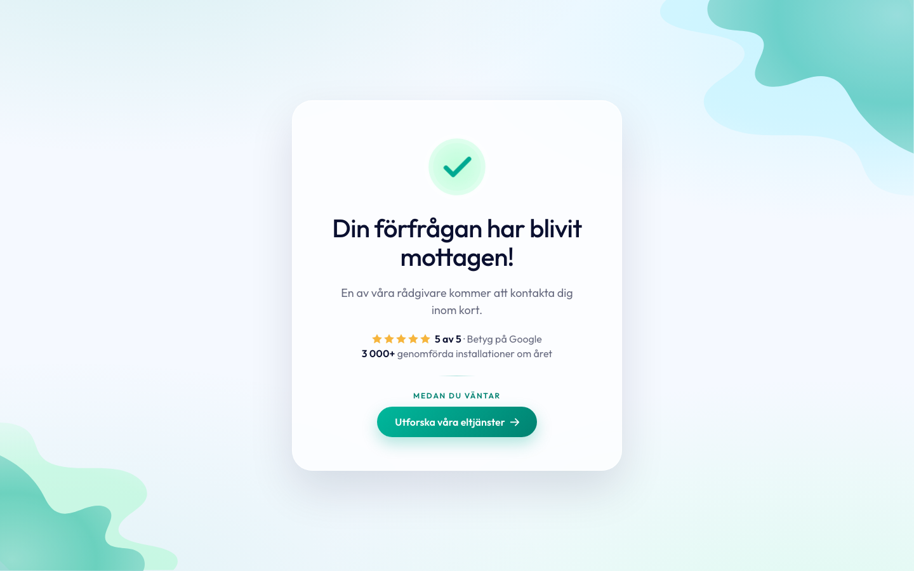

Riktning A
Samlat kort
Allt i ett lugnt glaskort som ankrar innehållet (som din ursprungliga sida, fast luftigare). "Medan du väntar" blir en proportionerlig teal-knapp. Renast och tryggast.
★ Min rekommendation Öppna helskärm →